def BaptisteMathus =
people.filter(p -> p.isHacker())
.filter(p -> p.isOpenSourceFan())
.filter(p -> p.isCommitterOn("Jenkins"))
.filter(p -> p.isCommitterOn("MojoHaus"))
.filter(p -> p.strivesToBeDeveloperCatalyst())
.filter(p -> p.isShadowITSpecialist())
.uniqueResult()Jenkins aux amphét'
Baptiste Mathus@bmathus
A propos de moi
#jenkins #java #docker #maven #automation #devops #nexus #sonarqube #passion
Au programme
Arrêter les croneries
- Papi, raconte-nous comment tout ça est arrivé !
- Trucs & astuces de gestion de cluster Jenkins
- Aujourd’hui et demain
On rembobine
2007 : Apache Continuum — nos débuts dans l’Intégration Continue
- quelques jobs
- 1 machine AIX
- gestion "en plus"
- pour 10 à 30 personnes
2009 : passage à Hudson, parce que…
Simple things should be simple, complex things should be possible.Alan Kay
2009 : Sonar, Inspection Continue - Qualité du code.
2011 : Oracle forke la communauté Hudson, nous restons sur Jenkins
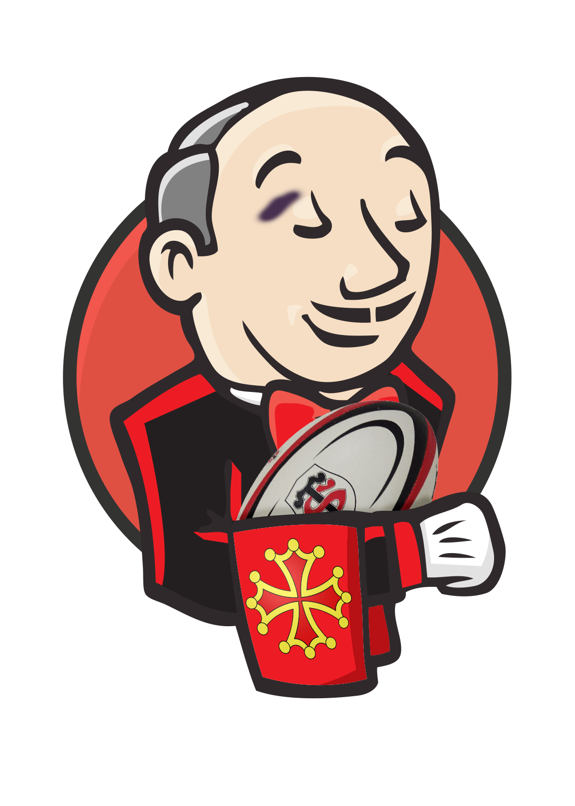
(Au fait : pour ceux qui penseraient encore qu’Hudson est en concurrence avec Jenkins)
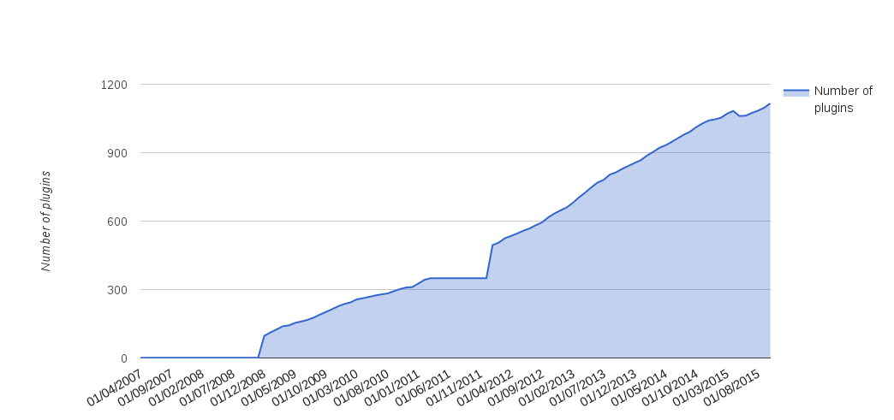
Fast-Forward : 2015
- 1000 jobs
- 50 heures de build par jour en moyenne
- 20 noeuds Red Hat, AIX, Windows…
- 1, puis 2 personnes à plein temps
- 20 millions de lignes de logs / semaine
- pour environ 100 à 200 personnes*
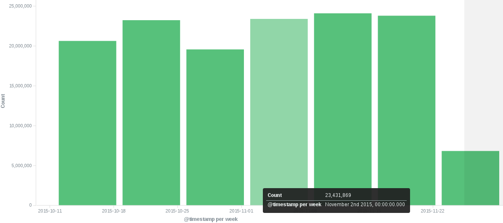
Suivi de l’état des jobs d’une équipe
Avant : jobs globalement suivis, mais pouvaient rester rouge pendant longtemps.
Pas toujours jugé important.
Introduire des Radiateurs d’Information ?
Au début… Accueil mitigé…
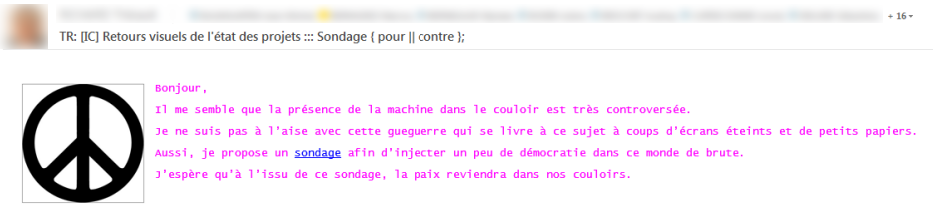
Aujourd’hui
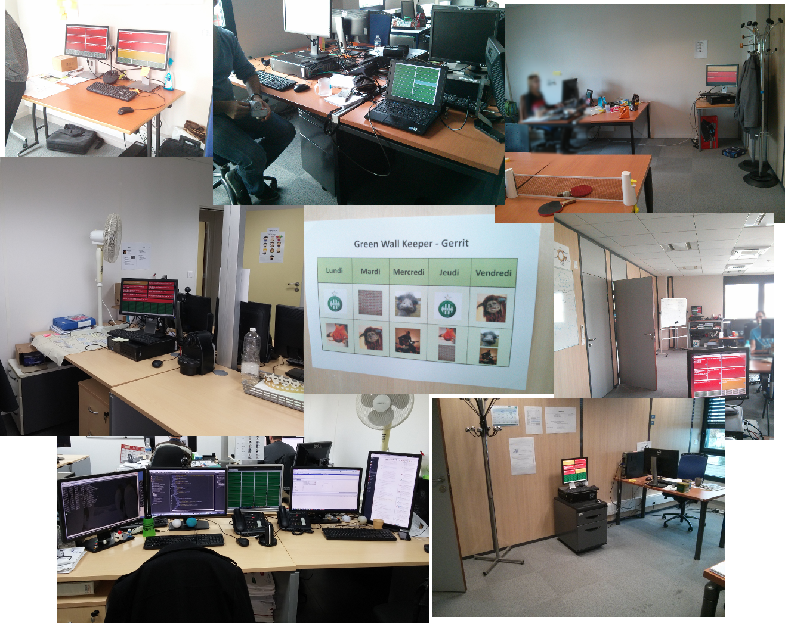
Mais comment ?
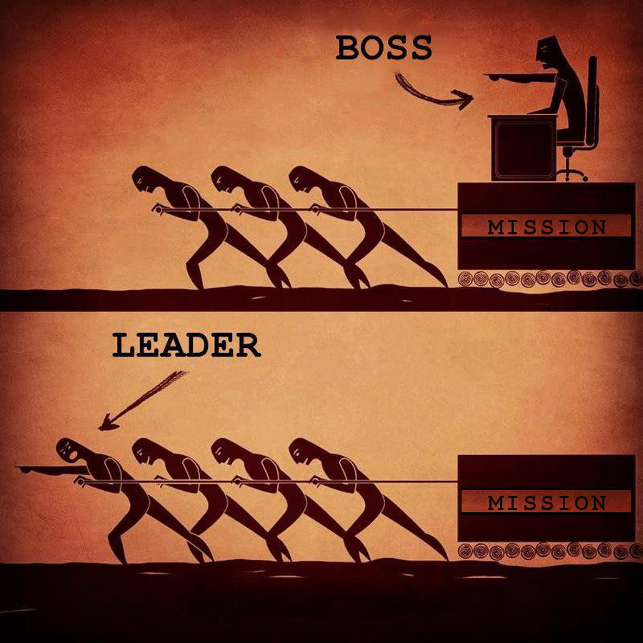
Code Review
Avant : un peu outillé, mais pas trop. Processus daté
Aujourd’hui :
- Jobs Sonar dans les walls
- Gerrit : revue automatique des nouveaux commits (en "cours" de généralisation)
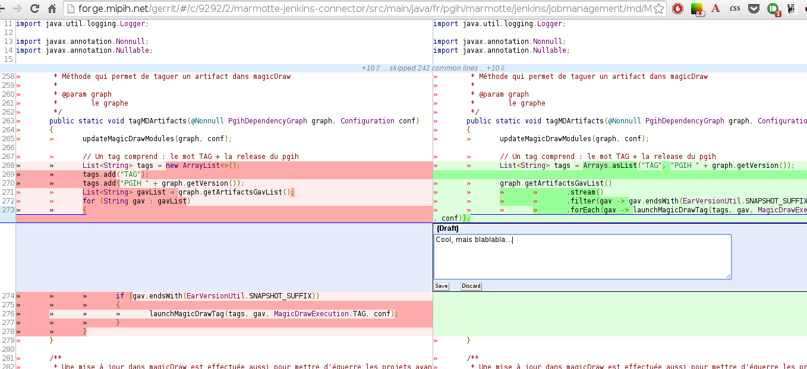
Vraiment utile ? Et ça plaît ?
Franchement, si je devais rebosser dans une boîte où ya pas d’IC, pas d’automatisation, ce serait… Déprimant !Entendu au café

Sondages fin 2014 :
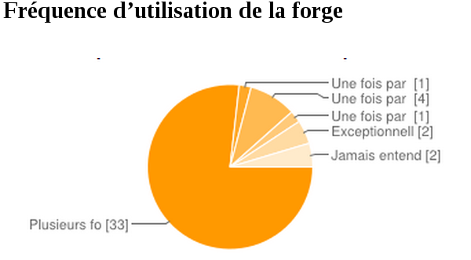
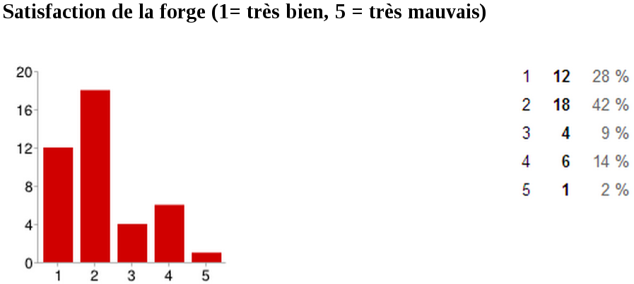
Sans ces outils, pas d’Agilité.
Repasser tous les tests de non-régression à la main toutes les 2 semaines ?
Deliver as fast as possibleThe speed paradox – fast delivery also gives superb quality
Lean Software Development
- Éliminer les gaspillages
- Améliorer l’apprentissage
- Retarder l’engagement
- Livrer aussi vite que possible
- Donner le pouvoir à l’équipe
- Intégrer la qualité dès la conception
- Considérer le produit dans sa globalité
Donnez le pouvoir - soyez DevOps !
Pourquoi ?
Comme le management, l’outillage doit être un soutien, un catalyseur, pas un frein !
Faire confiance. Accompagner au lieu de contrôler.
Accompagner les utilisateurs/dévelopeurs vers l’autonomie
Fournir des produits facultatifs permettant d’accélérer, plutôt que de faire pour l’équipe.
Vous connaissez Netflix ?
Netflix has a superstar development team, we don’t!a Fortune 100 CTO to Adrian Cockroft (Directeur chez Netflix)
Netflix hired them from you, and got out of their way.
(Prenez le pouvoir)
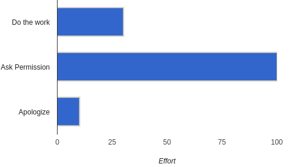
Il est plus facile de demander pardon que de demander l’autorisation !
Autres intérêts d’une forge
Excellent laboratoire pour tester de nouvelles choses dans des conditions exigeantes, sans pour autant être directement face au client.
OK, passons à la technique maintenant !
Architecture typique d’une forge
Courante :
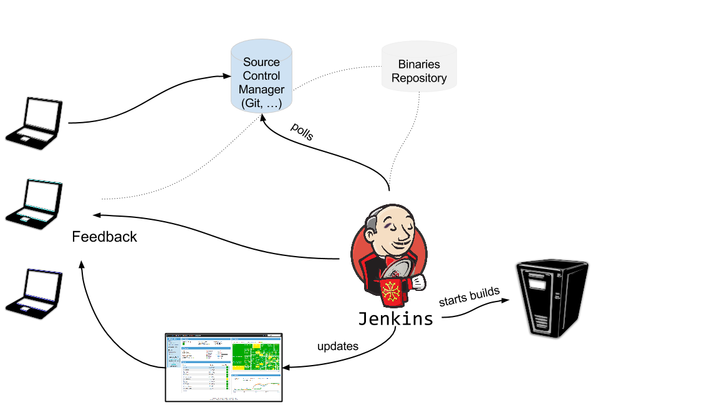
Intermédiaire :
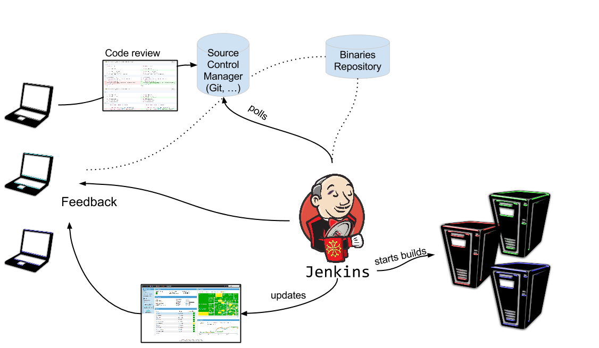
Avancée
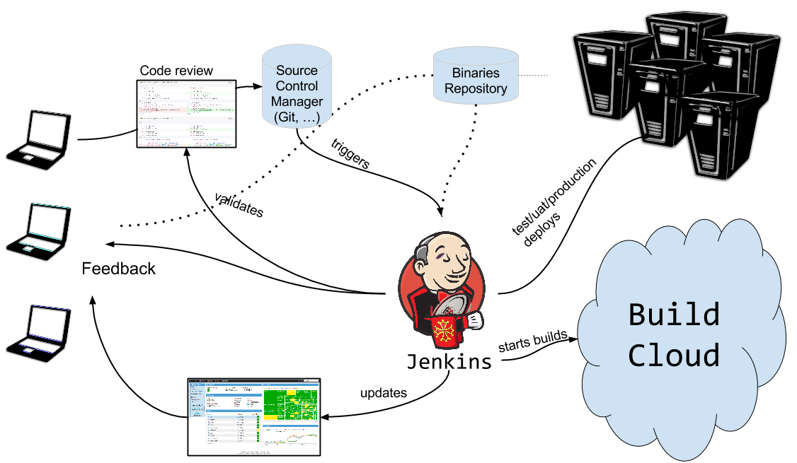
Revue de code
- Gerrit, intégration Jenkins via le Gerrit Trigger Plugin
- GitHub Pull-Requests, intégration Jenkins via le GitHub pull request builder plugin
Versionner ses jobs
Gêné par le fait que les jobs configurés dans l’IHM ne soient pas identiques, pas versionnés, etc. ?
Utilisation d’une syntaxe déclarative pour décrire ses jobs
Exemple : Génération de 11 jobs sur le même modèle en une simple boucle
def giturl = 'https://github.com/quidryan/aws-sdk-test.git'
for(i in 0..10) {
job("DSL-Tutorial-1-Test-${i}") {
scm {
git(giturl)
}
steps {
maven("test -Dtest.suite=${i}")
}
}
}Décrire un processus de déploiement complexe
Depuis 2014, nouveau plugin Workflow. On peut décrire le processus que l’on souhaite via un Domain Specific Language
Facilitation du Continuous Delivery dans Jenkins
node('remote') {
input 'Ready to go?'
def mvnHome = tool 'M3'
sh "${mvnHome}/bin/mvn -B -Dmaven.test.failure.ignore verify"
}Jenkins : conseils et astuces
- Ne jamais affecter un job à un noeud, toujours à un label
- Utiliser Jenkins pour installer automatiquement les outils (Maven, JDK…)
- Utiliser Docker pour définir un environnement précis pour une
stepd’un job (exemple : telle étape doit se dérouler sur uneFedora: très simple avecDocker)
- les
System Groovy Script
Très pratique pour faire des choses par lot (renommages en masse, etc.)
Alternatives : jenkins CLI, API REST…
Script qui cherche les builds dont l’ancienneté est plus faible que la valeur indiquée, puis calcule le temps d’exécution total de tous les builds identifiés.
def numberOfHoursBack = 7*24
def totalBuildTime =
Jenkins.instance.getItems(Job.class).collect { job ->
job.getBuilds().byTimestamp(
System.currentTimeMillis()-numberOfHoursBack*60*60*1000,
System.currentTimeMillis()
)
}
.flatten()
.collect { build -> build.getDuration() }
.sum()
def totalBuildTimeInMinutes = (int)totalBuildTime/(60*1000)
println "During the last $numberOfHoursBack hours"
println "\t $totalBuildTimeInMinutes minutes total"
println "\t ${totalBuildTimeInMinutes/numberOfHoursBack} minutes per hour in average"Affiche :
During the last 168 hours
22490 minutes total
133.8690476190 minutes per hour in averageLa gestion des noeuds de build
- Avant : VM statique(s)
- Aujourd’hui : cluster Docker Swarm - autoscaling extrêmement simple
Docker en un slide ?
Pour simplifier : VM allégée, qui démarre en quelques millisecondes
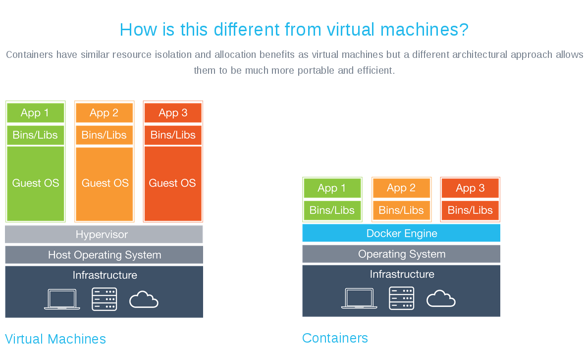
Création d’un cluster swarm via Docker Machine
Création d’un cluster de 100 machines !
$ TOKEN=$(docker run --rm swarm create)
$ DIGITALOCEAN_SIZE=64gb
$ docker-machine create \
--driver digitalocean --digitalocean-access-token=... \
--swarm --swarm-master --swarm-strategy "binpack" \
--swarm-discovery token://$TOKEN \
swarm-master
$ for nodeNumber in $(seq -w 1 100)
do
docker-machine create \
--driver digitalocean --digitalocean-access-token=... \
--swarm --swarm-discovery token://$TOKEN \
swarm-node-$nodeNumber
doneC’est prêt, on peut lancer quelques builds via le plugin Docker de Jenkins ! :-)
Démo !
Préambule : archi Docker Swarm
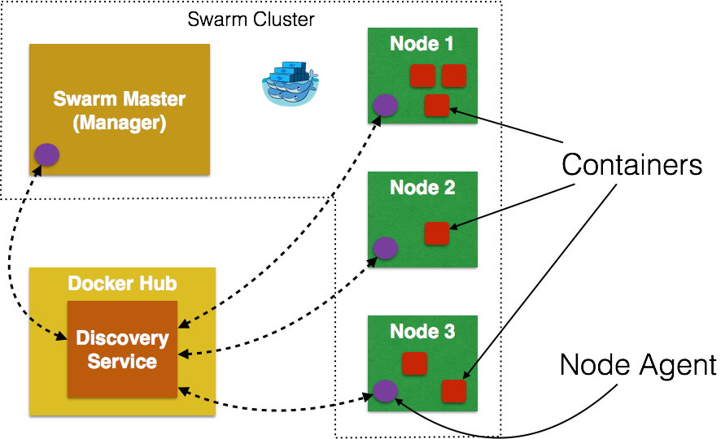
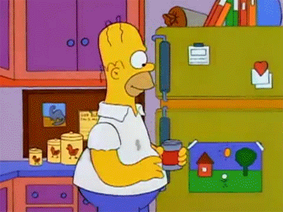
Docker Swarm + Jenkins Docker Plugin
- Docker in Docker : attention aux bind mount en mode sibling (recommandé)!
Oubliez
docker run -v a:b someimageContainer leak
- Problème : Swarm finira par refuser de démarrer de nouveaux conteneurs !
Conclusion
Consacrer le temps humain à ce que les machines ne savent pas faire.
Aujourd’hui, avec le cloud, il est devenu beaucoup plus facile de monter une infrastructure intéressante pour la CI.
Investir dans l’outillage : c’est pouvoir aller plus vite, garder ou attirer les bonnes personnes dans votre entreprise !
/